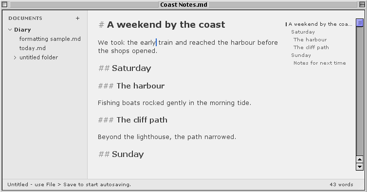
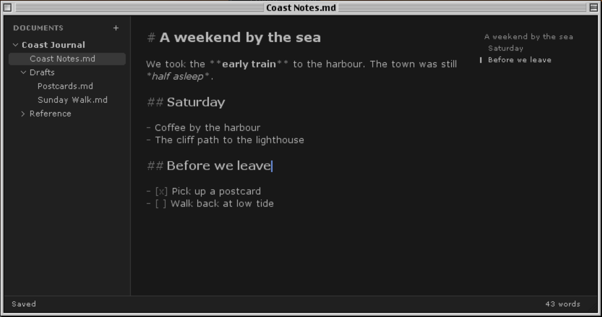

Find and replace
Find the right words.
⌘F searches the current document, steps through every match, and replaces one or all occurrences. Select text first to make it the query. ⌘P still opens any file by name.
A quiet place to write.
A modern Markdown and plain-text editor for PowerPC Macs.
Mac OS 9 · PowerPC Tiger · PowerPC Leopard

Writing tools
Linewren brings the conveniences of a modern writing app to the machines you still enjoy using.
Find and replace
⌘F searches the current document, steps through every match, and replaces one or all occurrences. Select text first to make it the query. ⌘P still opens any file by name.
Focus modes
Focus Layout clears away the chrome. Line Focus and Paragraph Focus gently dim the rest. Typewriter Scrolling keeps the sentence you are shaping in a comfortable place.
Spell checking
Check on demand or as you type. Review suggestions, ignore a word in one document, and keep a language per file. Mac OS 9 includes US English and Russian dictionaries.
Live Markdown
Headings, emphasis, links, quotes, lists, code, tables, tasks, and strikethrough gain structure as you type. The Markdown source stays visible and the file stays plain text.
Your display, your pace
Switch between light and dark themes, choose any installed typeface and point size, and show words, characters, or no count at all.

Ready when your PowerPC Mac is
Free and open source under the MIT License.
Get the latest release